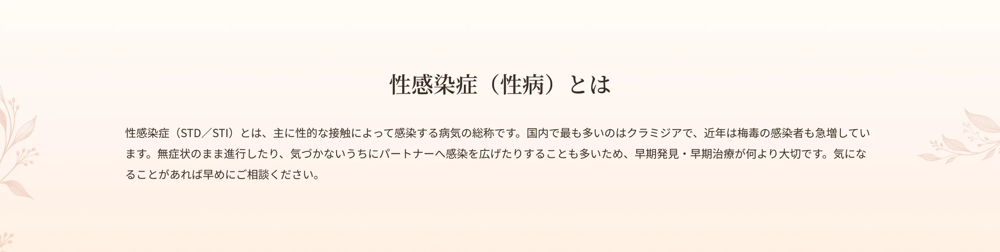
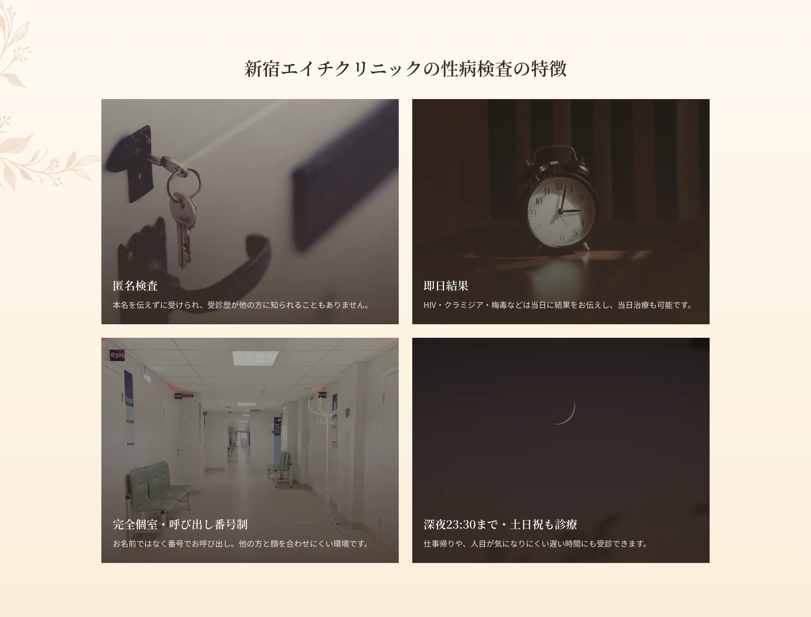
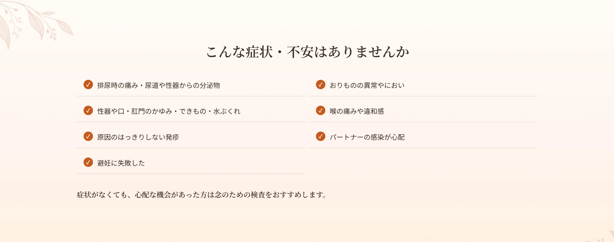
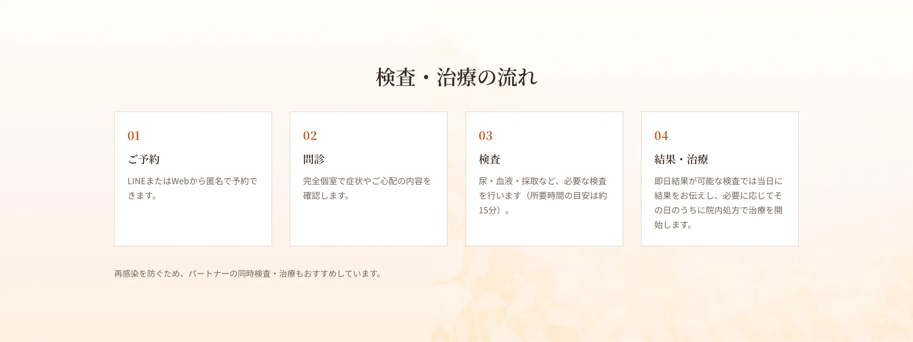
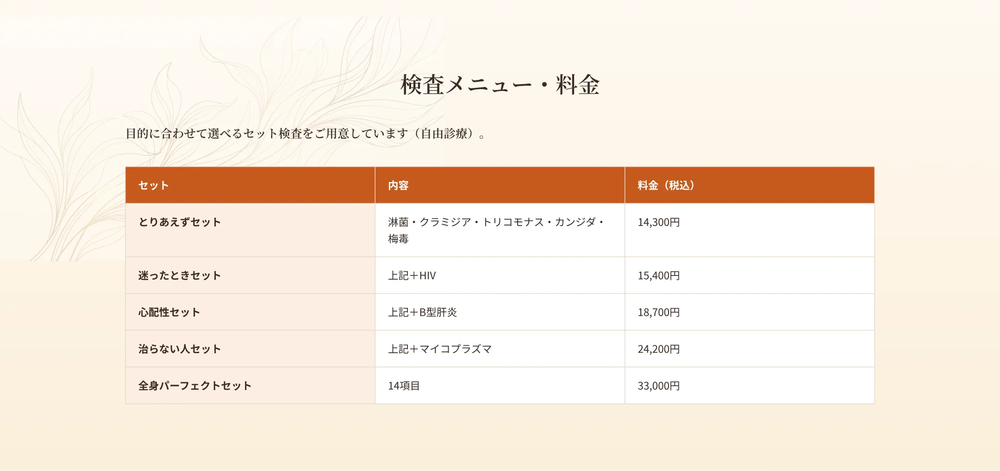
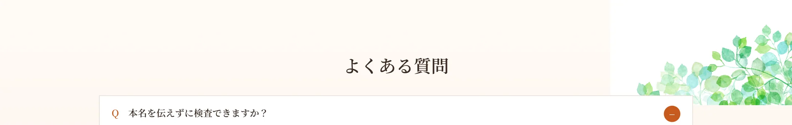

A.匿名での検査が可能です。受診歴も他の方に知られることはありません。完全個室・番号でのお呼び出しに対応しています。
A.HIV・クラミジア・梅毒など即日結果が可能な検査があります。必要に応じて当日治療も行えます。
A.心配な機会があった方は、症状がなくても検査いただけます。
A.再感染を防ぐため、パートナーの同時検査・治療を推奨しています。
A.深夜23:30まで（最終受付22:30）、土日祝も診療しています。